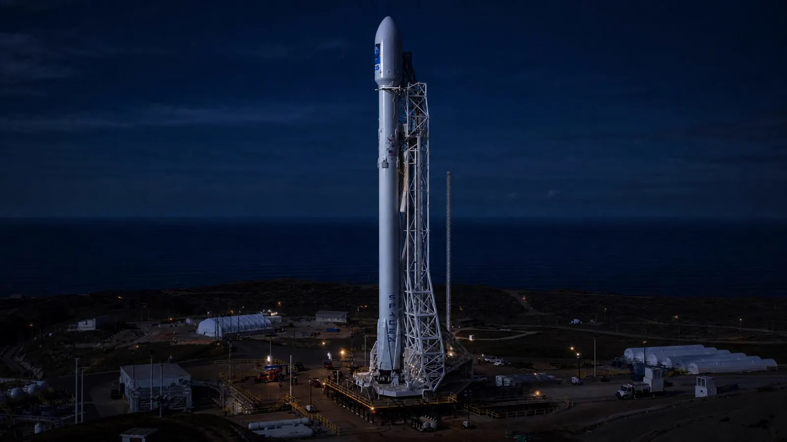

No hay cable de extensión que llegue a órbita. Cada satélite, sonda o cohete debe generar y gestionar su propia energía. Esta página recorre cómo se alimenta una nave espacial —paneles solares, RTGs de plutonio-238, celdas de combustible— y los cohetes que reabrieron el acceso al espacio en el siglo XXI, con la conexión directa a la energía nuclear.
CohetesSatélitesRTG · Pu-238Paneles solaresSAOCOM · INVAPSpaceX
~12 min de lectura
No existe un cable de extensión que llegue a órbita. Cada vehículo espacial —un satélite de comunicaciones, una sonda interplanetaria, un telescopio, un rover marciano— debe generar, almacenar y gestionar su propia energía. En la práctica se usan cuatro familias de fuentes, y casi siempre se combinan.
Paneles solares
Órbita terrestre baja y media
El estándar para la mayoría de los satélites. Celdas fotovoltaicas de alta eficiencia (GaAs, triple unión) que entregan entre 1 y 20 kW. Los satélites geoestacionarios de comunicaciones llevan alas de 30–40 m de envergadura.
RTG de ²³⁸Pu
Misiones al espacio profundo
Generador termoeléctrico de radioisótopos. La desintegración alfa del plutonio-238 produce calor que se convierte en electricidad. Vida útil > 30 años sin sol. Lo usan Voyager, New Horizons, Cassini, Curiosity y Perseverance.
Celdas de combustible
Transbordadores y misiones tripuladas
Hidrógeno + oxígeno → electricidad + agua potable como subproducto. El Space Shuttle generó 12 kW en órbita con tres celdas. Las misiones Apolo también las usaron, y los trajes espaciales modernos llevan versiones portátiles.
Baterías Li-ion
Eclipse y respaldo
Toda nave solar pasa eclipses (la Tierra bloquea el Sol). En esos tramos —hasta 35 minutos en órbita geoestacionaria— las baterías de ion-litio aportan la energía. También respaldan picos de consumo en maniobras.
La elección depende de tres variables: cuánta potencia se necesita (watts o kilovatios), cuánta luz solar hay disponible (abunda en órbita terrestre, escasea más allá de Marte) y cuánto pesa y cuesta la fuente. Un panel solar de 1 kW pesa unos 5 kg; un RTG de 1 kW pesa 200 kg pero entrega energía durante décadas sin sol. Las misiones al espacio profundo eligen RTG. Las constelaciones de satélites en órbita baja eligen paneles.
02
RTGs y plutonio-238: la energía nuclear que viaja
Un RTG (Radioisotope Thermoelectric Generator) convierte calor en electricidad usando termocuplas. La fuente de calor no es un reactor nuclear de fisión: es un bloque de plutonio-238, un isótopo que emite partículas alfa (⁴He) y se desintegra con una semivida de 87,7 años. Como las alfas son frenadas en pocos micrómetros de material, el ²³⁸Pu es relativamente seguro de manipular (se puede llevar en la mano con un guante) pero su calor es permanente: el mismo gramo de plutonio seguirá entregando 0,5 W térmicos durante décadas.
La conexión con la energía nuclear civil es directa: el plutonio-238 no se encuentra en la naturaleza en cantidad útil. Se fabrica en reactores nucleares al neutron-irradiar neptunio-237. Históricamente lo produjeron Estados Unidos y la Unión Soviética; desde 2015 la Oak Ridge National Laboratory reanudó la producción para la NASA. Cada gramo cuesta alrededor de 8.000 dólares producirlo.
Misiones espaciales con RTG
Los RTG han alimentado algunas de las misiones más ambiciosas de la historia. Esta es una selección:
Misión
Año
Destino
RTG
Estado
Voyager 1
1977
Espacio interestelar
MHW (3 × ²³⁸Pu)
Operando · 24.000 M km
Voyager 2
1977
Espacio interestelar
MHW (3 × ²³⁸Pu)
Operando · 20.000 M km
New Horizons
2006
Plutón + cinturón de Kuiper
GPHS-RTG (10,9 kg ²³⁸Pu)
Operando
Curiosity (MSL)
2011
Marte
MMRTG (4,8 kg ²³⁸Pu)
Operando
Perseverance (M2020)
2020
Marte (cráter Jezero)
MMRTG (4,8 kg ²³⁸Pu)
Operando
Dragonfly
2027 (prev.)
Titán (luna de Saturno)
MMRTG
En desarrollo
Imagen · Voyager 1 con su RTG
El MMRTG (Multi-Mission Radioisotope Thermoelectric Generator) que llevan Curiosity y Perseverance entrega 110 W eléctricos al inicio de la misión y decae ~1,6% por año. Suficiente para mover un rover de una tonelada, calentar su electrónica en las noches marcianas de –90 °C y cargar las baterías de ion-litio que aportan los picos. La Voyager 1, lanzada hace casi 50 años, sigue emitiendo señales con los 4 W que le quedan de su RTG original.
03
Argentina en el espacio: la cadena INVAP
Argentina no sólo observa el espacio: lo construye. La empresa rionegrina INVAP —fundada en 1976 y surgida del programa nuclear argentino— diseña y construye satélites, radares, reactores de investigación y productos de alta complejidad. La misma cadena de conocimiento sirve para un reactor de potencia y para una plataforma satelital: materiales, electrónica de potencia, gestión térmica, integración de sistemas.
SAOCOM 1A y 1B: los satélites del INVAP
Los satélites SAOCOM (Satélite Argentino de Observación Con Microondas) son una constelación de dos satélites de radar de apertura sintética (SAR) lanzados en 2018 y 2020, fruto de un acuerdo entre la CONAE (Comisión Nacional de Actividades Espaciales) y la cooperación italiana (ASI). Cada uno pesa 3 toneladas, mide 10 metros con paneles solares extendidos y orbita a 620 km de altura. Son los satélites de radar más grandes jamás construidos en el hemisferio sur.
El radar SAR es la pieza clave: emite pulsos de microondas en banda L (1,275 GHz) que atraviesan las nubes y la noche, y mide el eco para producir imágenes de la superficie con resolución de 10 metros. Esto permite mapear inundaciones, sequías, incendios forestales, hielos continentales y la humedad del suelo para agricultura de precisión. Argentina es líder mundial en este tipo de observación.
INVAP · cadena nuclear-espacial
En Bariloche, la misma fábrica que produce el reactor OPAL (Australia) y los componentes del RA-10 integra los paneles solares, las estructuras mecánicas y la electrónica de potencia de los SAOCOM. La CNEA provee el know-how nuclear y de gestión térmica; el CONICET aporta la ciencia; la CONAE define la misión. Es un caso único: un país con tres satélites operativos propios y dos reactores de potencia.
Otras misiones argentinas en órbita
Además de los SAOCOM, Argentina opera otros satélites en cooperación con otras agencias:
Satélite
Año
Tipo
Aporte argentino
SAOCOM 1A
2018
Radar SAR
Plataforma + radar completo (INVAP/CONAE)
SAOCOM 1B
2020
Radar SAR
Idéntico a 1A (gemelo)
SAC-D/Aquarius
2011
Observación oceánica
Plataforma + instrumentos (CONAE/NASA)
ARSAT-1
2014
Comunicaciones geoestacionario
Plataforma completa (INVAP)
ARSAT-2
2015
Comunicaciones + datos
Plataforma completa (INVAP)
CubeSats
varios
Educativos / científicos
Universidades (UBA, UNLP, INVAP)
04
Los cohetes que reabrieron el espacio
Los cohetes de SpaceX (Falcon 9, Falcon Heavy y Starship) no usan propulsión nuclear: todos queman化学反应 (queroseno o metano) con oxígeno líquido. La revolución que trajeron no es energética sino logística: la reutilización. En lugar de tirar el cohete después de cada vuelo, la primera etapa vuelve a la Tierra y se vuelve a usar, bajando el costo por kilogramo en órbita de ~US$ 20.000 a ~US$ 2.000.
Estos son los tres modelos 3D terminados, idénticos a los del sitio de Naturales 1, que explican la diferencia entre cada vehículo.

Falcon 9
Modelo 3D terminado
Falcon 9
El caballo de batalla de SpaceX. Cohete de dos etapas parcialmente reutilizable: la primera etapa vuelve a la Tierra y aterriza en una plataforma flotante o en Cabo Cañaveral. Ha completado más de 300 misiones llevando satélites, astronautas (Crew Dragon) y suministros a la Estación Espacial Internacional.
Tres núcleos Falcon 9 unidos en un mismo cohete. Fue el cohete más potente del mundo en operación comercial. Capaz de enviar 64 toneladas a órbita baja —o un auto Tesla al espacio profundo—. Los dos boosters laterales regresan y aterrizan en tierra; el central lo hace sobre una plataforma marítima.
El cohete más grande y poderoso jamás construido. Completamente reutilizable: tanto el propulsor Super Heavy (los 33 motores Raptor) como la nave Starship vuelven a la Tierra. Diseñado para llevar personas a la Luna (misión Artemis) y, eventualmente, a Marte. A diferencia del Falcon 9, quema metano (CH₄) en vez de queroseno.
Los cohetes químicos son excelentes para salir de la Tierra, pero su impulso específico (\(I_{sp}\)) es bajo: 300–450 segundos. Para misiones largas —Marte tripulado, lunas de Júpiter, sondas interestelares— hace falta algo distinto. Ahí entran los sistemas nucleares, que pueden entregar \(I_{sp}\) de 800 a 10.000 segundos y permitir viajes que con química tomarían décadas.
Motores térmicos nucleares (NTR)
Un Nuclear Thermal Rocket (NTR) calienta hidrógeno a ~2.500 °C haciéndolo pasar por un reactor compacto de fisión de uranio enriquecido, y lo expulsa por una tobera. El programa NERVA de la NASA probó 20 motores en los años 60, con \(I_{sp}\) de 850 s —el doble de un cohete químico—. Hoy la NASA trabaja en el sucesor DRACO con DARPA, previsto para demostración en órbita en 2027.
Kilopower: reactores compactos para la superficie de Marte
La NASA y el Departamento de Energía de EE.UU. desarrollaron Kilopower: un reactor de fisión compacto de uranio-235 que entrega entre 1 y 10 kW eléctricos durante 10 años sin reabastecimiento. Cabe en un cilindro de 1,5 m y pesa 1.500 kg. Es la fuente ideal para una base lunar o marciana: donde el sol es débil o el día dura 24 horas, los paneles solares no alcanzan.
Fusión: el horizonte más lejano
Los motores de fusión nuclear prometen \(I_{sp}\) del orden de 10.000–100.000 s. Conceptos como el Direct Fusion Drive de Princeton (anular, D-He3) o el Z-pinch pulsed podrían llevar una nave a Marte en 30 días o a Tritón en 7 años. Son proyectos a décadas de distancia, pero ya hay reactores de prueba en tierra. El ITER francés, en construcción, será el primer reactor de fusión que genere más energía de la que consume.
Conexión nuclear ↔ espacial
El mismo plutonio-238 que alimenta una Voyager podría alimentar una base lunar; el mismo uranio-235 que enriquece combustible para Atucha II podría alimentar un Kilopower en Marte. Las centrales argentinas producen el Mo-99 que se transforma en Tc-99m para gammagrafías —el mismo isótopo que INVAP usa como trazador en sus satélites. La cadena nuclear civil y la cadena espacial son la misma cadena: calor, materiales, control.
Si querés profundizar en los motores nucleares para viajes interplanetarios, mirá el artículo de revista Propulsión nuclear. Si te interesa el contexto global de reactores y misiones, está La nuclear en el mundo. Y si querés entender cómo se miden los riesgos de toda esta tecnología espacial, saltá a Dosis y protección.
Conceptos Clave
✦No hay cable de extensión al espacio. Cada nave debe generar su energía con paneles solares (órbita baja), RTG de ²³⁸Pu (espacio profundo), celdas de combustible (misiones tripuladas) o baterías Li-ion (eclipse).
✦El plutonio-238 que alimenta los RTG se fabrica en reactores nucleares, tiene semivida de 87,7 años y entrega calor durante décadas sin sol. La Voyager 1 sigue funcionando con su RTG original desde 1977.
✦Argentina es protagonista: los satélites SAOCOM 1A/1B (CONAE + INVAP) son los mayores radares SAR del hemisferio sur. INVAP —la misma empresa que construye reactores y radioisótopos— integra las plataformas, los paneles y la electrónica.
✦Los cohetes de SpaceX (Falcon 9, Falcon Heavy, Starship) son de propulsión química (queroseno o metano), no nuclear. Su revolución es la reutilización: la primera etapa vuelve a la Tierra y se vuelve a usar, reduciendo el costo por kilo en órbita.
✦El futuro de la propulsión espacial sí es nuclear: motores NTR (\(I_{sp} \sim 850\) s), reactores compactos Kilopower para bases en Marte y, más adelante, fusión con impulsos específicos de 10.000–100.000 s.
✦La cadena nuclear civil (²³⁸Pu, ²³⁵U, Mo-99, materiales avanzados) y la cadena espacial (RTGs, Kilopower, reactores compactos) son la misma cadena tecnológica: calor, materiales, gestión térmica, control de la reacción.